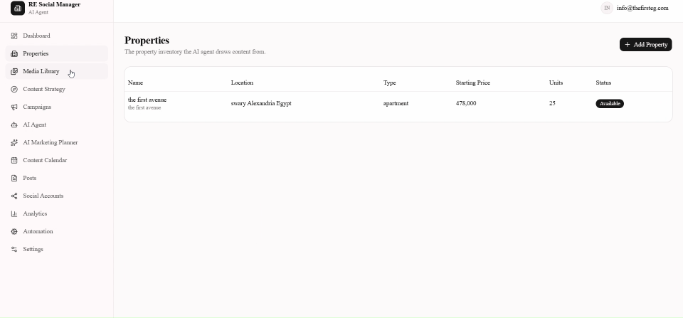
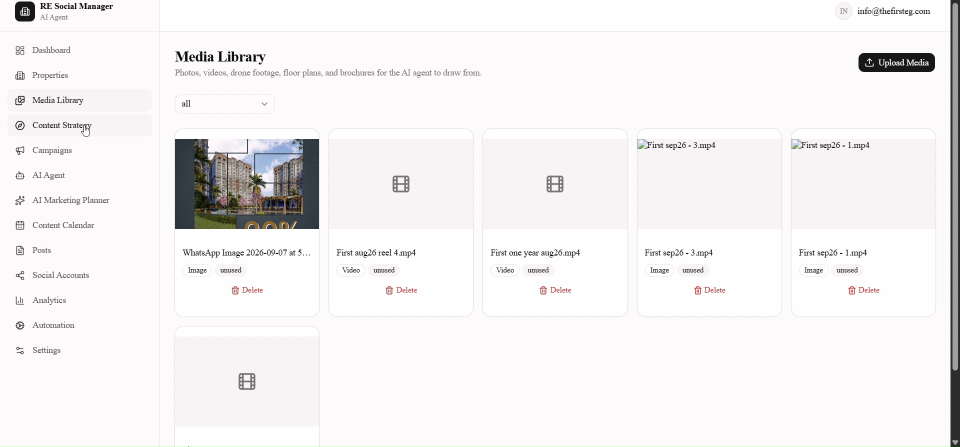
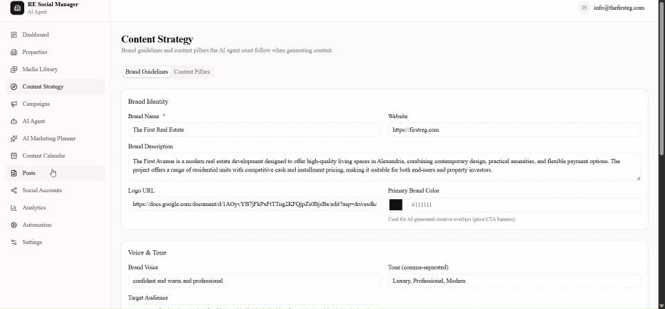

The Problem
Real estate marketing teams juggle property data, photos and videos, brand voice guidelines, and posting schedules across many social platforms at once — usually spread across spreadsheets, shared drives, and separate platform logins. Keeping content on-brand and consistently published is manual, repetitive work.
This app centralizes all of it — property inventory, media library, and brand strategy — in one place, and lets an AI agent turn that source material into scheduled, multi-platform posts, so a real estate marketing team can track what's published, what's scheduled, and what needs review from a single dashboard.
Core Features
Content Dashboard
A monthly overview of content status — published, scheduled, needs review, drafts, and failed posts — plus active campaigns, active properties, and a content-by-platform breakdown.
Property Inventory
A structured property database (location, type, starting price, unit count, availability status) that the AI agent draws from when generating content.
Media Library
A central store of photos, videos, drone footage, floor plans, and brochures, tagged as used or unused, ready for the AI agent to pull from.
Brand & Content Strategy
Configurable brand identity — name, description, logo, and primary brand color used for AI-generated creative overlays like price and CTA banners — plus brand voice, tone, and target audience settings that guide every generated post.
Multi-Platform Social Accounts
Real OAuth connections to social platforms, with live connection status and error surfacing — not a mock-up. Each platform only shows "Connected" once the handshake actually completes.
Also in the App
Campaigns, an AI Agent control panel, an AI Marketing Planner, a Content Calendar, a Posts manager, Analytics, and Automation settings round out the workflow.
Connected Platforms
The Social Accounts screen manages real API connections across seven platforms:
Walkthrough

Properties — the property inventory the AI agent draws content from.

Media Library — photos, videos, drone footage, floor plans, and brochures for the AI agent to draw from.

Content Strategy — brand guidelines and content pillars the AI agent must follow when generating content.
Built With AI-Assisted Development
As a Claude AI Certified specialist, Rewan built this application end-to-end by directing AI-assisted development workflows — pairing her product thinking and real estate marketing expertise with generative AI tools to design, build, and ship a working platform.